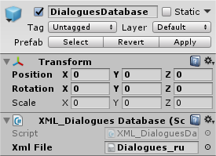

XML Dialogues Database
Основное

Note
При использовании ввода данных через XML-файл необходимо указывать корректные значения "Size" массива AnswerSettings. XML-файл данных используется только для изменения значений "Text" в DialogueSettings и AnswerSettings.
Дополнительная Информация
XML File
Файл диалогов и ответов, который будет использоваться при выбранном типе ввода данных "External".
Файл может быть переключен в редакторе, может быть редактирован сторонними средставами.